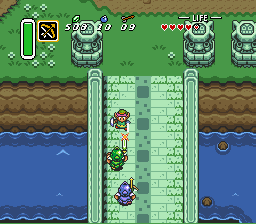

Images can be used and displayed in a wide variety of ways using HTML and/or CSS. A standalone image can be inserted on a page as a decorative element or material reference. It can also be made to serve a function, such as by making it into a clickable link or button. CSS can also be used to create an image gallery, displaying a selection of multiple images.
In the above examples, using the "image" function, the images are typically displayed in-line with the text and other elements on the surface of the page. But images can also be used as the background for a page or portion of the page by using the "background-image" function.
There are many CSS properties to customize the display of an image. A property called “Border Radius” can be used to create a soft-edged or rounded image:
CSS can also be used to create thumbnail images, which can also be made into links:
Dimensions determine the physical size of an image (how large it appears on screen), while resolution refers more to the amount of visual information contained in the image. This is why low-resolution images become blocky and pixelated when enlarged. The evolution of video games is another well-known example of resolution:
The high resolution image on the right is much more photorealistic because it conveys more information to the eye than the old-school blocky pixels. Not that old-school games aren’t tons of fun!
Different image file formats have various drawbacks and benefits. PNG and JPG are the file types most commonly used for digital photographs and virtual images, such as logos, and are, therefore, probably the most common types seen on a typical webpage. GIFs are also quite popular, especially since the advent of memes and social media, where animated GIF images have become a staple. Other file types, such as WebP and SVG, are less common and typically used only with certain applications or programs.